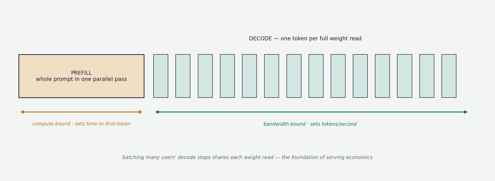
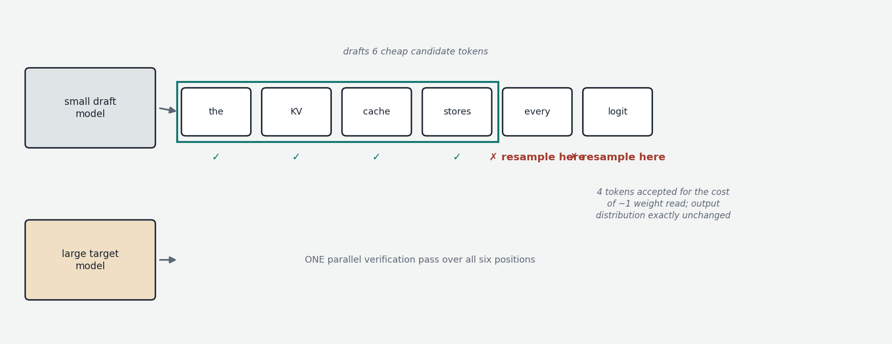

Chapter 6 established the physics of single-stream inference: decode is bandwidth-bound, prefill is compute-bound. This chapter covers the systems layer built on top of that physics — the techniques that turn a model that can generate ten tokens per second for one user into a service handling thousands of users, and that squeeze extra speed out of even a single stream. These techniques live in engines like vLLM, SGLang, and TensorRT-LLM, and they matter beyond datacenters: the moment an automated pipeline fires concurrent requests at a local model server, this machinery is what determines throughput.
The two phases, formalized
A request's life has two phases with opposite resource profiles. Prefill processes the entire prompt in one parallel pass — thousands of tokens flowing through the model simultaneously, exactly like a training forward pass — populating the KV cache and producing the first output token. It is compute-bound and its duration determines time to first token (TTFT), the latency metric users feel as responsiveness. Decode then generates tokens one at a time, each step reading all the (active) weights to process a single token — bandwidth-bound, arithmetically almost idle, and its rate is the tokens per second users feel as generation speed.

The decode phase's idleness is the central inefficiency of naive serving: the processor reads 40 GB of weights from memory to do one token's worth of trivial math. The foundational observation of LLM serving is that this waste is shareable. If sixteen users' requests are decoding simultaneously, one read of the weights can serve all sixteen — each weight value, once fetched, is applied to sixteen different token computations. Throughput multiplies roughly sixteen-fold for nearly the same memory traffic. Batch decoding converts a bandwidth-bound problem back toward a compute-bound one, and essentially all serving economics flow from this fact. (It is also why API tokens are priced so far below what naive single-stream arithmetic would suggest.)
Continuous batching
Classical batching — collect N requests, run them to completion together — fits poorly here, because LLM requests are wildly heterogeneous: one user asked for a word, another for an essay. In a static batch, finished requests' slots sit idle until the longest member completes, and newly arrived requests wait for the whole batch to drain. Continuous batching (also called in-flight batching, introduced by the Orca system in 2022) fixes this by rebuilding the batch at every decode step: a request that finishes leaves the batch immediately; a waiting request joins at the next step (its prefill slotted in alongside ongoing decodes). The batch becomes a constantly-churning population rather than a fixed cohort, keeping the hardware saturated continuously. This single technique is the largest throughput multiplier in modern serving — typically an order of magnitude over naive sequential handling.
PagedAttention: memory management for the KV cache
Large decode batches immediately hit a wall: the KV cache. Recall its arithmetic — potentially megabytes per token, gigabytes per long-context request — and now multiply by dozens of concurrent requests. Worse, early engines allocated each request's cache as one contiguous memory block sized for the maximum possible length, since you cannot know in advance how long a generation will run. The result was catastrophic waste: memory reserved but never used (the request finished early), and fragmentation — free memory shattered into gaps too small to hold any new request. Measurements behind the vLLM project found only 20–40% of allocated KV memory held actual data.
PagedAttention (2023) solved this by importing a fifty-year-old idea from operating systems: virtual memory paging. The KV cache is divided into small fixed-size blocks (e.g., 16 tokens' worth of keys and values), allocated on demand from a shared pool, and a per-request block table — exactly analogous to a page table — maps each request's logical token positions onto whatever physical blocks it happens to hold, which need not be contiguous. Memory waste collapses to a fraction of one block per request; fragmentation disappears; and the freed memory directly translates into larger batches and therefore more throughput. The paging structure also enables sharing: when many requests begin with the same prefix — a long system prompt, a shared document, the same few-shot examples — their block tables can point at the same physical blocks, computed once. Persisted across requests, this is prefix caching: a pipeline that sends the same 3,000-token system prompt with every call pays its prefill once, and subsequent calls' TTFT collapses to near-instant. For prompt-heavy automated workloads, structuring prompts so that the stable part comes first and the variable part last (making prefixes maximally shareable) is one of the highest-leverage optimizations available, and it is the mechanism behind the prompt-caching discounts in commercial APIs.
Two scheduling refinements round out the modern stack. Chunked prefill splits a long prompt's prefill into pieces interleaved with ongoing decodes, preventing one user's 50,000-token document from stalling everyone else's generation for seconds. And at datacenter scale, prefill-decode disaggregation runs the two phases on separate machine pools — compute-heavy hardware for prefill, bandwidth-heavy for decode, shipping the KV cache between them — since the phases want different hardware anyway.
Speculative decoding: spending compute to save bandwidth
One more technique attacks single-stream latency itself, and it is elegant enough to deserve a full explanation. Decode's bottleneck is the one-token-per-weight-read rhythm. But notice an asymmetry the prefill phase already revealed: a transformer can verify many tokens in one pass for the same cost as generating one (a single forward pass over positions 1–N produces the model's predicted distribution at every position simultaneously). Generation is serial only because each token must be chosen before the next can be computed.

Speculative decoding exploits this. A small, fast draft model (or a cheap auxiliary mechanism) races ahead and proposes a run of, say, 5–8 candidate tokens. The large model then runs one forward pass over all the candidates at once, obtaining its own distribution at each position, and accepts the proposed tokens one by one for as long as they match what it would have sampled — rejecting at the first divergence and resampling from there. The acceptance rule is constructed (via a rejection-sampling argument) so that the output distribution is mathematically identical to what the large model alone would have produced: this is pure speed, zero quality change. When draft and target agree often — and on predictable stretches like code boilerplate, JSON syntax, or formulaic prose they agree very often — several tokens are produced per large-model weight-read, yielding typical end-to-end speedups of 2–3×. Variants differ in where the draft comes from: a separate small model of the same family, extra lightweight prediction heads bolted onto the large model itself (Medusa), or a small head that drafts using the large model's own internal features (EAGLE, currently the strongest family); the same idea also underlies the "fast mode" options of several commercial APIs.
Constrained decoding: structured output as logit surgery
A final serving-layer capability connects back to the decoding-policy chapter and matters enormously for programmatic use: constrained decoding, also called grammar-guided or structured generation. The need: a pipeline consuming model output as JSON cannot tolerate a 1% rate of malformed syntax. The mechanism: since the model emits a full probability distribution at every step, the serving engine can intervene before sampling — compile the required format (a JSON schema, a regular expression, an arbitrary grammar) into a state machine that tracks what has been generated so far and knows which tokens are syntactically legal next, then mask every illegal token's logit to negative infinity. Sampling proceeds normally over the survivors. The output is guaranteed valid by construction — the model is physically unable to emit a token that breaks the schema. This is implemented in llama.cpp's grammar support, vLLM/SGLang's structured output, and libraries like Outlines, and it is the correct foundation for any LLM-in-a-pipeline design (sentiment scores, classifications, extracted fields feeding downstream code): the schema is enforced at the sampling layer, not requested politely in the prompt. The one caveat: constraints guarantee form, not content — a syntactically perfect JSON object can still contain a hallucinated value, which is Chapter 9's territory.
The picture to keep
Serving is the art of refusing to waste the weight-read. One read of the model can decode tokens for an entire batch (continuous batching), so the KV cache — not compute — becomes the scarce resource, managed with OS-style paging and deduplicated via prefix sharing (PagedAttention, prefix caching). Even a single stream can beat the one-token-per-read rhythm by drafting cheaply and verifying in bulk (speculative decoding), with zero change to the output distribution. And because the engine owns the logits at every step, it can guarantee structural validity of output by construction (constrained decoding). Together these explain the otherwise puzzling gaps between naive local performance, optimized local serving, and commercial API pricing — and they are all mechanism, not model: the same weights, served smarter.